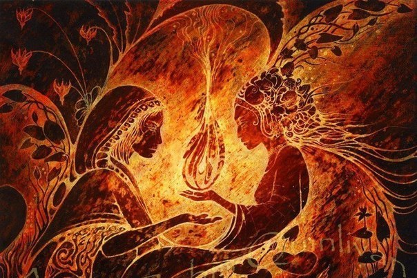

Кто мы? Почему мы не говорим нашу правду прямым текстом? Понимание не должно быть наносное, правду надо построить внутри себя, кирпичик за кирпичиком. Тогда прорастет дерево понимания. Мы не строим потемкинских деревень. Наша правда не может быть принята без осмысления, лечь на существующие основы, словно внешний слой. Мы проводим инвазию. Главное наше условие — честность к нам и себе. Внутренний критерий один и правда одна. Мы прорастаем изнутри, захватываем полностью и кладём в основу нашу главную мыслеформу: Кредо Жизни. После этого говорим: вы наши! Наступает великая радость Единения
Кредо Жизни: При всех равных поставить Жизнь выше смерти, спасти и сохранить, не дать погибнуть. Наша Иерархия основана на слове Жизнь. Откройтесь нашему эхо — своему внутреннему голосу, услышьте наш Зов. Тогда мы неизбежно придём к вам на встречу. Мы устраним любые неполадки и в любую непогоду мы к вам явимся и скажем,
Кредо Жизни: При всех равных поставить Жизнь выше смерти, спасти и сохранить, не дать погибнуть. Наша Иерархия основана на слове Жизнь. Откройтесь нашему эхо — своему внутреннему голосу, услышьте наш Зов. Тогда мы неизбежно придём к вам на встречу. Мы устраним любые неполадки и в любую непогоду мы к вам явимся и скажем,
Что Мы — Вместе,
Что мы — рядом,
Что Наша Иерархия — это мы с вами
Что Мы — Единое целое,
Что наша семья — отныне ваша,
Что МЫ — ЕСТЬ.
Что мы — рядом,
Что Наша Иерархия — это мы с вами
Что Мы — Единое целое,
Что наша семья — отныне ваша,
Что МЫ — ЕСТЬ.
